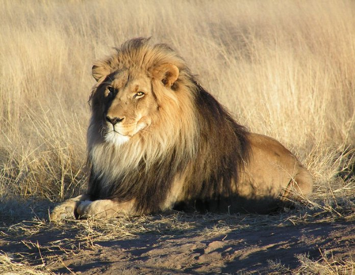

The African lion (Panthera leo) is one of the most iconic big cats in the world, found mainly in sub-Saharan Africa. Lions are known for their majestic appearance and social behavior, living in groups called prides. Unfortunately, the lion population has been declining due to habitat loss, human-wildlife conflict, and illegal hunting.
|
See Also : |
Threats To Lions
|
For more information and wildlife programs, Contact Us
Photo: Yathin S Krishnappa, Wikimedia Commons, CC BY-SA 3.0.